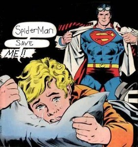
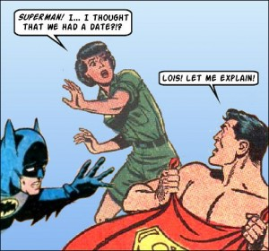

Supa-Man Lova: All Star Superman & Superman: Kryptonite TPB Reviews

{kind=link}

When I was about 6 years old I had a Dad crafted fort in my back yard. It was basically just 3 pieces of wood nailed together to form a triangle with a back on it and a curtain for the door. All I had in there was a Superman movie poster and a little lock box that I kept crackers, pepperoni, and a few Superman comics in. It was my mini-me fortress of solitude.
Flash forward a few years and I wanted shit to do with Superman. The average brooding teenager couldn't connect with the super-hero equivalent of the all-American jock. A super square power chin holder with the morals of a boy scout. Fuck that! We also can not forget the abysmal Lois & Clark show. Dean Cain looked like he was modeling for the Sears Halloween circular all while trying to recruit new members to N.A.M.B.L.A. I was more interested in things like an undead goth make-up flaunting crow magnet who belted out rocking guitar riffs in the rain and sought revenge against spastic thugs who had cool catch phrases like, "Fire It Up!". I bet you didn't know emo was born at the exact moment Brandon Lee delivered the line, "It can't rain all the time." As usual, I'm getting off topic and rambling about The Crow. Anyway, now that I'm older, my shunning of traditional heroes has gone the way of JNCO's and I'm ready to give the squeak-squeaky clean do-gooder with the S on his chest another try.
{kind=link}

On recommendation I scooped up two Supe trades: All Star Superman and Superman: Kryptonite. I had high hopes for Kryptonite due to the art being done by personal fave Tim Sale. My standards for eye pleasing aesthetics were met, but unfortunately the story was comparable to the Superman themed FreeFall ride at Six Flags. One minute your 10 stories up preparing for a thrilling experience, the next your feet are severed at the ankles from a finally freed revenge obsessed mechanical cable. The All Star title was more in my favor. In one of the collected issues, Supes gives the mutha of all birthday gifts to Lois Lane by bestowing to her the wealth of his powers for a day. The two fly around and do some inane shit, but I'm totally convinced he granted her his strengths so he can finally bang her out without pushing her uterus through her esophagus. Most mortal females couldn't handle human based Dirk Diggler girth, so its only logical a krypton crotch pounding from Kal-El would do some irreparable damage.
Ratings:
Superman: Kryptonite - 3 Christopher Reeve hate harboring horses with a thought bubble above their snout reading "get off my back bitch!" out of 5.
All Star Superman - 5 veiny rock hard Lois Lane impaling super schlongs out of 5.
{kind=link}
Related posts


Assholder: Start Your New Career Now!
Who says there aren’t any jobs available? You an always move to the UK and become an ass holder.

We Asked What the Hell Is a Quadratic Equation?... Then the Party Started
“The Oracle” where a select group is asked to answer unknown questions and to ask unanswerable questions. These are submitted…

Speed Racer Star Hospitalized After Attack
Fuzzles Of Speed Racer Fame and Clyde, Clint Eastwood's one time companion and star of Every Which Way But Loose,…